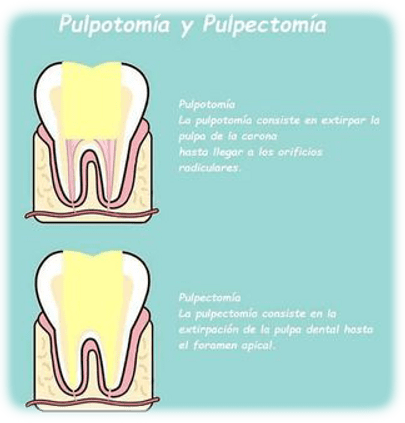
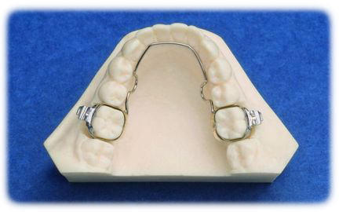

Odontopediatría

Pulpotomía
Una pulpotomía es una intervención que únicamente se puede realizar en dientes de leche y, por tanto, en niños.
Se realiza cuando una caries se ha extendido más allá de la superficie dentaria, pero todavía no hay grandes daños en la raíz periapical.
La pulpotomía es niños es un tratamiento frecuente, sobre todo cuando el paciente no lleva unas adecuadas rutinas de higiene en casa.
La pulpotomía infantil consiste en vaciar parcialmente la pulpa dentaria dañada para, posteriormente, realizar una reconstrucción de la pieza.
Mantenedores de espacio
Se denomina mantenedor a todo aquel dispositivo, bien fijo bien removible, encaminado a preservar el espacio que han dejado uno o varios dientes, siempre que su uso está comprobado mediante el análisis del espacio.
Sirven para mantener el espacio desde que el diente temporal cae y erupciona el nuevo diente permanente.
Si no se mantiene el espacio, los dientes temporales se mueven, y se cierra el espacio que necesitan los dientes definitivos para erupcionar correctamente.
